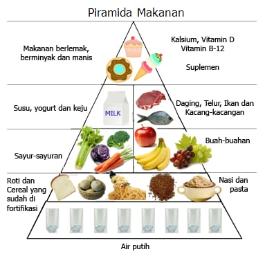

.png)

ISI NUTRISI KITA
Pentingnya Nutrisi untuk Kesehatan
Apa Itu Gizi?
Gizi adalah ilmu yang mempelajari bagaimana makanan dan zat gizi di dalamnya mempengaruhi kesehatan tubuh. Nutrisi yang baik sangat penting untuk pertumbuhan, perkembangan, serta mencegah berbagai penyakit.
Macam-Macam Zat Gizi :
1. Karbohidrat
Sumber energi utama bagi tubuh. Contoh: nasi, roti, kentang, jagung.
2. Protein
Berperan dalam pembentukan dan perbaikan jaringan tubuh.
Contoh: daging, ikan, telur, tahu, tempe.
3. Lemak
Sumber energi cadangan dan membantu penyerapan vitamin.
Contoh: minyak zaitun, kacang-kacangan, ikan berlemak.
4. Vitamin
Membantu berbagai fungsi tubuh, seperti kekebalan dan metabolisme.
Contoh:
Vitamin A (wortel, bayam) untuk kesehatan mata.
Vitamin C (jeruk, stroberi) untuk daya tahan tubuh.
5. Mineral
Penting untuk kesehatan tulang, darah, dan saraf.
Contoh:
Kalsium (susu, keju) untuk tulang.
Zat besi (daging merah, bayam) untuk pembentukan darah.
6. Serat
Membantu pencernaan dan menjaga kesehatan usus.
Contoh: sayur-sayuran, buah-buahan, gandum utuh.
7. Air
Berperan dalam hampir semua proses tubuh, termasuk pencernaan dan sirkulasi darah.
Prinsip Pola Makan Sehat :
1. Gizi Seimbang: Mengonsumsi berbagai jenis makanan dengan proporsi yang tepat.
2. Hindari Makanan Olahan Berlebihan: Makanan cepat saji dan tinggi gula bisa meningkatkan risiko obesitas dan penyakit kronis.
3. Perbanyak Sayur dan Buah: Kaya serat, vitamin, dan antioksidan yang baik untuk tubuh.
4. Kendalikan Konsumsi Garam dan Gula: Batas konsumsi harian garam (5 gram) dan gula (50 gram) untuk mencegah hipertensi dan diabetes.
5. Minum Air yang Cukup: Sekitar 2 liter atau 8 gelas per hari untuk menjaga hidrasi tubuh.
Dampak Gizi yang Tidak Seimbang :
1. Gizi Kurang: Bisa menyebabkan stunting, anemia, atau gangguan pertumbuhan.
2. Gizi Lebih: Berisiko menyebabkan obesitas, diabetes, dan penyakit jantung.
Rumus IMT (Indeks Massa Tubuh)
Rumus IMT:IMT = Berat badan (kg) : (Tinggi badan (m) X Tinggi badan (m))
Contoh perhitungan IMT:
Jika berat badan 65 kg dan tinggi badan 1,60 m, maka IMT = 65 : (1,60 x 1,60) = 25,4 kg/m²
Jika berat badan 70 kg dan tinggi badan 1,60 m, maka IMT = 70 : (1,60 x 1,60) = 27,3 kg/m²
Klasifikasi IMT :
Underweight (IMT Di Bawah 18,5 kg/m2)
Normal range (IMT 18,5 – 25 kg/m2)
Overweight at risk (IMT 25 – 30 kg/m2)
Obese (IMT Lebih dari 30kg/m2)
Rekomendasi Makanan

1. Underweight (IMT < 18,5 kg/m²)
Tujuan: Meningkatkan berat badan dengan makanan tinggi kalori dan nutrisi seimbang. Rekomendasi makanan:
✅ Karbohidrat kompleks: Nasi merah, kentang, ubi, roti gandum, oatmeal.
✅ Protein tinggi: Daging ayam tanpa kulit, ikan, telur, tahu, tempe, kacang-kacangan.
✅ Lemak sehat: Alpukat, kacang almond, minyak zaitun, biji-bijian.
✅ Susu & olahannya: Susu full cream, yoghurt, keju.
✅ Buah tinggi kalori: Pisang, mangga, kurma, alpukat.
✅ Camilan sehat: Kacang-kacangan, granola, smoothies tinggi protein.
❌ Hindari: Junk food, minuman bersoda, makanan tinggi gula tanpa gizi seimbang.
2. Normal Range (IMT 18,5 – 25 kg/m²)
Tujuan: Mempertahankan berat badan dengan pola makan sehat dan seimbang.
Rekomendasi makanan:
✅ Karbohidrat seimbang: Nasi merah, quinoa, roti gandum, kentang rebus.
✅ Protein berkualitas: Daging tanpa lemak, ikan, ayam tanpa kulit, tahu, tempe, telur.
✅ Serat tinggi: Sayuran hijau, wortel, brokoli, buah-buahan segar.
✅ Lemak sehat: Minyak zaitun, kacang-kacangan, biji chia.
✅ Cukup cairan: 2-3 liter air putih per hari.
✅ Camilan sehat: Buah, yoghurt, granola tanpa gula tambahan.
❌ Hindari: Makanan olahan tinggi gula, lemak trans, dan garam berlebih.
3. Overweight at Risk (IMT 25 – 30 kg/m²)
Tujuan: Mengontrol berat badan dan mencegah risiko obesitas.
Rekomendasi makanan:
✅ Karbohidrat kompleks dalam porsi terbatas: Nasi merah, oatmeal, ubi, quinoa.
✅ Protein tinggi dan rendah lemak: Ikan, ayam tanpa kulit, putih telur, tahu, tempe.
✅ Serat tinggi: Sayur dan buah rendah indeks glikemik (apel, pir, bayam, brokoli).
✅ Lemak sehat dalam jumlah kecil: Alpukat, kacang-kacangan, minyak zaitun.
✅ Air putih cukup: 2-3 liter per hari.
✅ Camilan sehat: Edamame, yoghurt rendah lemak, buah-buahan.
❌ Hindari: Gorengan, makanan tinggi gula, minuman bersoda, makanan cepat saji.
4. Obese (IMT > 30 kg/m²)
Tujuan: Menurunkan berat badan dengan pola makan rendah kalori dan tinggi nutrisi.
Rekomendasi makanan:
✅ Karbohidrat sangat terbatas: Nasi merah dalam porsi kecil, sayur sebagai sumber serat.
✅ Protein tinggi dan rendah lemak: Ikan kukus, dada ayam tanpa kulit, putih telur, tahu, tempe.
✅ Sayur dan buah rendah indeks glikemik: Bayam, brokoli, tomat, apel, pir.
✅ Lemak sehat dalam jumlah minimal: Minyak zaitun, biji chia, kacang-kacangan dalam porsi kecil.
✅ Air putih cukup: 2-3 liter per hari, bisa dikombinasikan dengan infused water.
✅ Camilan sehat: Smoothie tanpa gula, yoghurt rendah lemak, salad tanpa dressing tinggi lemak.
❌ Hindari: Gorengan, makanan cepat saji, minuman manis, roti putih, mie instan, camilan tinggi kalori.
Tujuan: Meningkatkan berat badan dengan makanan tinggi kalori dan nutrisi seimbang. Rekomendasi makanan:
✅ Karbohidrat kompleks: Nasi merah, kentang, ubi, roti gandum, oatmeal.
✅ Protein tinggi: Daging ayam tanpa kulit, ikan, telur, tahu, tempe, kacang-kacangan.
✅ Lemak sehat: Alpukat, kacang almond, minyak zaitun, biji-bijian.
✅ Susu & olahannya: Susu full cream, yoghurt, keju.
✅ Buah tinggi kalori: Pisang, mangga, kurma, alpukat.
✅ Camilan sehat: Kacang-kacangan, granola, smoothies tinggi protein.
❌ Hindari: Junk food, minuman bersoda, makanan tinggi gula tanpa gizi seimbang.
2. Normal Range (IMT 18,5 – 25 kg/m²)
Tujuan: Mempertahankan berat badan dengan pola makan sehat dan seimbang.
Rekomendasi makanan:
✅ Karbohidrat seimbang: Nasi merah, quinoa, roti gandum, kentang rebus.
✅ Protein berkualitas: Daging tanpa lemak, ikan, ayam tanpa kulit, tahu, tempe, telur.
✅ Serat tinggi: Sayuran hijau, wortel, brokoli, buah-buahan segar.
✅ Lemak sehat: Minyak zaitun, kacang-kacangan, biji chia.
✅ Cukup cairan: 2-3 liter air putih per hari.
✅ Camilan sehat: Buah, yoghurt, granola tanpa gula tambahan.
❌ Hindari: Makanan olahan tinggi gula, lemak trans, dan garam berlebih.
3. Overweight at Risk (IMT 25 – 30 kg/m²)
Tujuan: Mengontrol berat badan dan mencegah risiko obesitas.
Rekomendasi makanan:
✅ Karbohidrat kompleks dalam porsi terbatas: Nasi merah, oatmeal, ubi, quinoa.
✅ Protein tinggi dan rendah lemak: Ikan, ayam tanpa kulit, putih telur, tahu, tempe.
✅ Serat tinggi: Sayur dan buah rendah indeks glikemik (apel, pir, bayam, brokoli).
✅ Lemak sehat dalam jumlah kecil: Alpukat, kacang-kacangan, minyak zaitun.
✅ Air putih cukup: 2-3 liter per hari.
✅ Camilan sehat: Edamame, yoghurt rendah lemak, buah-buahan.
❌ Hindari: Gorengan, makanan tinggi gula, minuman bersoda, makanan cepat saji.
4. Obese (IMT > 30 kg/m²)
Tujuan: Menurunkan berat badan dengan pola makan rendah kalori dan tinggi nutrisi.
Rekomendasi makanan:
✅ Karbohidrat sangat terbatas: Nasi merah dalam porsi kecil, sayur sebagai sumber serat.
✅ Protein tinggi dan rendah lemak: Ikan kukus, dada ayam tanpa kulit, putih telur, tahu, tempe.
✅ Sayur dan buah rendah indeks glikemik: Bayam, brokoli, tomat, apel, pir.
✅ Lemak sehat dalam jumlah minimal: Minyak zaitun, biji chia, kacang-kacangan dalam porsi kecil.
✅ Air putih cukup: 2-3 liter per hari, bisa dikombinasikan dengan infused water.
✅ Camilan sehat: Smoothie tanpa gula, yoghurt rendah lemak, salad tanpa dressing tinggi lemak.
❌ Hindari: Gorengan, makanan cepat saji, minuman manis, roti putih, mie instan, camilan tinggi kalori.